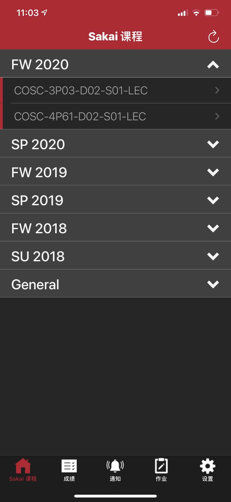
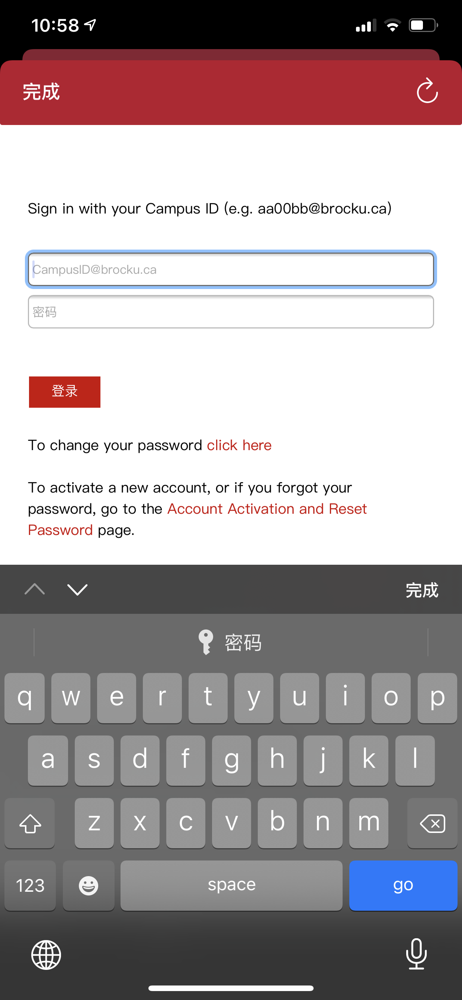
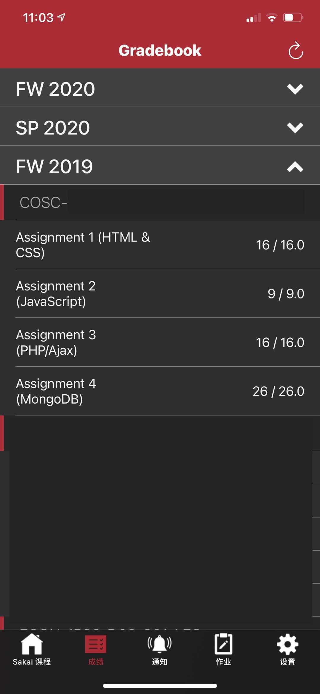

Sakai, 现在就能放在你的手中
Sakai 手机版是针对布鲁克大学的教育系统量身定制的第三方手机APP，使用 Sakai 官方 KeitaiAPI立即下载
SakaiApp
方便: 随时查看教授发送的通知关注: 随时关注是否出成绩了
安全: 使用官方 ADFS 登录，不会保存您的个人信息
  
Privacy and Terms 隐私条例
Brock Sakai 及其开发人员非常致力于确保您的信息安全。 Brock Sakai 不会使用您的任何信息。Brock Sakai 使用 cookie 来管理与 Sakai 服务器的会话。由于 Sakai 没有用于验证第三方服务（例如 Brock Sakai）的标准方法，因此必须存储 cookie 才能使该应用程序正常运行。 Brock Sakai 将不会看到您的密码，您可以通过 Web 视图中的 Brock adfs 身份验证来完成登录验证。
但如果需要启用自动登录，您的账户信息将会保存在您的手机本地，并且不会上传到任何地方，可以随时完整清除，卸载后也将消失。
Brock Sakai IOS版 使用 Google Firebase 服务跟踪功能使用情况和崩溃报告。为了了解有关 Google Firebase 可以从您那里收集哪些数据的更多信息，请参阅 Google Firebase 隐私政策。通过这些服务，Brock Sakai 仅收集完全匿名的设备信息和崩溃报告，而这些报告不会泄露有关您的任何其他信息。这些有助于改进 Brock Sakai，并使开发人员将精力集中在最重要的领域。IP地址收集也已禁用，Brock Sakai 不会收集私密信息。
如果您是布鲁克大学的学生，则在使用此应用程序时，还应遵守布鲁克大学的学术诚信政策以及对布鲁克大学 Sakai LMS 设置的任何其他规则和限制。
参与Beta测试
如果您希望在 Brock Sakai 应用的实验性功能发布之前抢先试用，不妨加入 Beta 版测试人员计划。作为 Beta 版测试人员，您将会成为该应用的开发过程中非常重要的一环。
您的参与和反馈将有助于我们发布更完善的应用版本。